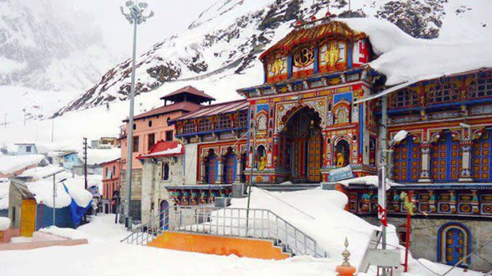
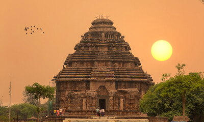

Badarinath or Badarinarayana Temple is a Hindu temple dedicated to
Vishnu. It is situated in the town of Badrinath in Uttarakhand,
India. The temple is also one of the 108 Divya Desams dedicated to
Vishnu—holy shrines for Vaishnavas—who is worshipped as Badrinath.
It is open for six months every year (between the end of April and
the beginning of November), because of extreme weather conditions in
the Himalayan region. The temple is located in Garhwal hill tracks
in Chamoli district along the banks of Alaknanda River. It is one of
the most visited pilgrimage centers of India, having recorded 2.8
million (28 lakh) visits in just 2 months in 2022.[1] It is one of
the Char Dham pilgrimage sites.
Read more...

Konark Sun Temple is a 13th-century CE Hindu Sun temple at Konark
about 35 kilometres (22 mi) northeast from Puri city on the
coastline in Puri district, Odisha, India.[1][2] The temple is
attributed to king Narasimhadeva I of the Eastern Ganga dynasty
about 1250 CE.
Read more...

The Somanath temple (IAST: somanātha) or Deo Patan, is a Hindu
temple located in Prabhas Patan, Veraval in Gujarat, India. It is
one of the most sacred pilgrimage sites for Hindus and is the first
among the twelve jyotirlinga shrines of Shiva.[1] It is unclear when
the first version of the Somnath temple was built, with estimates
varying between the early centuries of the 1st millennium and about
the 9th century CE.[2][3] The temple is not mentioned in the ancient
Sanskrit texts of Hinduism; while various texts, including the
Mahabharata and Bhagavata Purana, mention a tirtha (pilgrimage site)
at Prabhas Patan on the coastline of Saurashtra, where the temple is
presently located, there is no evidence that a temple existed at the
site in ancient times.
Read more...